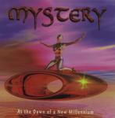

| Artist: | Mystery |
| Title: | At The Dawn Of A New Millennium |
| Label: | Unicorn Records UNCR0240 |
| Length(s): | 70 minutes |
| Year(s) of release: | 2000 |
| Month of review: | [01/2001] |
| 1) | Destiny? | 5.00 |
| 2) | Theatre Of The Mind | 6.04 |
| 3) | Before The Dawn | 6.28 |
| 4) | In My Dreams | 5.27 |
| 5) | Black Roses | 8.05 |
| 6) | The Inner Journey (part II) | 4.33 |
| 7) | Cinderella | 7.20 |
| 8) | The Mourning Man | 4.46 |
| 9) | Submerged | 7.53 |
| 10) | Shadow Of The Lake | 14.55 |